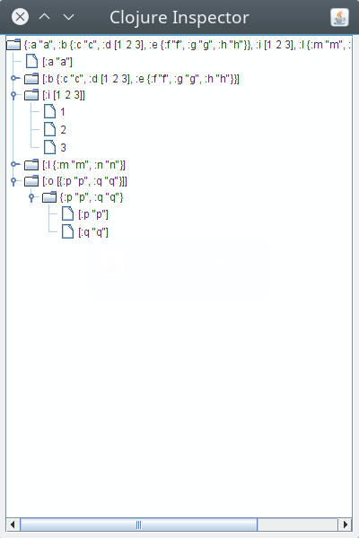

看完 ClojuTRE 2015 的 Unknown pearls from the Clojure standard library - Renzo Borgatti 演講後，來紀錄個筆記。
這場演講介紹了一些在 clojure.core 裡面的函式，這些函式平常可能不太有機會用到，但是可以協助我們除錯程式的問題。
投影片: 下載連結
destructure
destructure (解構) 在 Clojure 裡面是個非常實用的功能，可以方便我們對資料直接指派變數去代替它，如下:
No destructuring
(let [data [1 2 3] a (nth data 0) b (nth data 1) c (nth data 2)] (println "a:" a "b:" b "c:" c)) ;; => a: 1 b: 2 c: 3
With destructuring
(let [[a b c] [1 2 3]] (println "a:" a "b:" b "c:" c)) ;; => a: 1 b: 2 c: 3
我們可以透過 destructure 去觀察一個東西是如何被解構的，這邊是投影片給的範例:
(destructure '[[x y & others] v]) ;; => [v2 v ;; x (nth v2 0 nil) ;; y (nth v2 1 nil) ;; others (nthnext v2 2)]
當然投影片給的是整理後的結果，實際上我執行得到的結果是這樣的
[vec__23596 v seq__23597 (clojure.core/seq vec__23596) first__23598 (clojure.core/first seq__23597) seq__23597 (clojure.core/next seq__23597) x first__23598 first__23598 (clojure.core/first seq__23597) seq__23597 (clojure.core/next seq__23597) y first__23598 others seq__23597]
reductions
我們在 Clojure 中很常用 reduce 去將一個函數作用到 list 上的每兩個元素上，然後返回最後的結果，最常見的簡單函數就是一個 list 的元素全部相加
(reduce + (range 10)) ;; => 45
而 reduce 的運作過程，則可以透過 reductions 來協助我們進行查看，可以看到這邊最後得到的 45 就是我們想要的結果。
(reductions + (range 10)) ;; => (0 1 3 6 10 15 21 28 36 45)
test
在 Clojure 中，我們可以在 metadata 中設定好對一個函數的測試方式，然後呼叫 test 對該函數進行測試，這項功能很適合用在小函式的一些 assertion 測試上。
(defn add+ {:test #(do (assert (= (add+ 2 3) 5)) (assert (= (add+ 4 4) 8)))} [x y] (+ x y)) (test #'add+) ;; <= trigger ;; => :ok
你也可以透過 meta 去查看你這個函式的 metadata 或是測試用的函式資訊
(meta #'addd+) ;; => {:arglists ([x y]), :test #function[hello.core/fn--23678], :line 350, :column 4, :file "/home/coldnew/Workspace/hello/src/hello/cpre.clj", :name add+, :ns #namespace[hello.core]}
clojure.pprint/cl-format
clojure.pprint/cl-format 是 Clojure 移植 Common Lisp 的 format 函式，對於同時寫 Clojure 和 ClojureScript 的開發者而言， cl-format 可以同時用於 Clojure 和 ClojureScript 上，方便了不少。
(註: CLJS-324 ISSUE 尚未被解決前，Clojure 的 format 是無法用於 ClojureScript 上的)
如果要更多關於 cl-format 的使用，可以看看 Praticle Common Lisp 一書，我在 clojure/clojurescript 與 left-pad 一文亦有提到如何透過 cl-format 實作 Clojure/ClojureScript 皆可以用的 leftpad 函式。
投影片上給的範例則是這樣:
(clojure.pprint/cl-format nil "~:r" 1234) ;; => one thousand, two hundred thirty-fourth (clojure.pprint/cl-format nil "~@r" 1234) ;; => MCCXXXIV
clojure.java.browse/browse-url
clojure.java.browse/browse-url 會呼叫系統預設的瀏覽器，開啟你所指定的網頁。
(clojure.java.browse/browse-url "http://localhost:3000")
clojure.java.javadoc/javadoc
Clojure 畢竟是 JVM 上的語言，有時候我們需要查看一些 javadoc，或是查看 Clojure 內部的 Java 實現，可以透過 clojure.java.javadoc/javadoc 來查看
(clojure.java.javadoc/javadoc (list* 1 [])) ;; => open clojure.lang.Cons Javadoc
clojure.reflect/reflect
老實說我看了還是不知道這是什麼，也許是和 Java 的 reflection 有關，不過我們還是可以在 clojure.reflect/reflect 的文檔中看出一些東西
(require '[clojure.reflect :refer [reflect]]) (require '[clojure.pprint :refer [print-table]]) ;; Here we have a simple function that prints the ;; important bits of the class definition in a table. (->> String reflect :members print-table) ;; => ;; | :name | :return-type | :declaring-class | :parameter-types | :exception-types | :flags | ;; |--------------------------+------------------------+------------------+--------------------------------------------------------+----------------------------------------+-------------------------------| ;; | replaceAll | java.lang.String | java.lang.String | [java.lang.String java.lang.String] | [] | #{:public} | ;; | CASE_INSENSITIVE_ORDER | | java.lang.String | | | #{:public :static :final} | ;; | indexOf | int | java.lang.String | [char<> int int char<> int int int] | [] | #{:static} | ;; | codePointCount | int | java.lang.String | [int int] | [] | #{:public} | ;; | getChars | void | java.lang.String | [int int char<> int] | [] | #{:public} | ;; | regionMatches | boolean | java.lang.String | [int java.lang.String int int] | [] | #{:public} | ;; | isEmpty | boolean | java.lang.String | [] | [] | #{:public} | ;; | codePointAt | int | java.lang.String | [int] | [] | #{:public} | ;; | lastIndexOf | int | java.lang.String | [java.lang.String] | [] | #{:public} | ;; | startsWith | boolean | java.lang.String | [java.lang.String int] | [] | #{:public} | ;; ...etc
講者在投影片中給的範例則是這個: (注意到結果是節錄呦~)
(require '[clojure.reflect :refer [reflect]]) (println (with-out-str (clojure.pprint/write (reflect :a)))) ;; extract from a typical output: {:name invoke, :return-type java.lang.Object, :declaring-class clojure.lang.Keyword, :parameter-types [java.lang.Object java.lang.Object], :exception-types [], :flags #{:public :final}}
clojure.inspector/inspect-tree
我們在處理一些樹狀資料時(ex: JSON 格式)，有個圖示化的工具可以方便瀏覽所有資訊，這邊可以透過 clojure.inspector/inspect-tree 來查看
(require '[clojure.inspector :as i]) (def m {:a "a" :b {:c "c" :d [1 2 3] :e {:f "f" :g "g" :h "h"}} :i [1 2 3] :l {:m "m" :n "n"} :o [{:p "p" :q "q"}]}) (i/inspect-tree m)
這樣呼叫，會得到如下的視窗

clojure.lang.PersistentQueue
clojure.lang.persistentQueue 是 Clojure 下並未寫在 doc 上面的 Queue 實現 (java) ，我們可以用它來實作我們需要的 queue (佇列) 功能
基本上，你有以下幾種方法可以對你的 PersistentQueue 進行處理
peek
取得 queue 最頂端的資料(head)
pop
回傳不包含最頂端資料(head)的一個新的 PersistentQueue
conj
將資料加入到 queue 的尾巴
empty?
檢測 queue 是否為空的
seq
將 queue 的資料變成序列 (sequence)
投影片上，講者是舉這範例:
(def e (clojure.lang.PersistentQueue/EMPTY)) (def buf (reduce conj e (range 10))) (peek buf) ;; => 0 (peek (pop buf)) ;; => 1 (peek (pop (pop buf))) ;; => 2
而 StackOverflow 則是有人舉出了如何透過 clojure.lang.persistentQueue 實現自己的 queue 函式
(defn queue ([] clojure.lang.PersistentQueue/EMPTY) ([coll] (reduce conj clojure.lang.PersistentQueue/EMPTY coll))) (defmethod print-method clojure.lang.PersistentQueue [q ^java.io.Writer w] (.write w "#queue ") (print-method (sequence q) w)) (comment (let [*data-readers* {'queue #'queue}] (read-string (pr-str (queue [1 2 3])))))
fnil
我們在用 Clojure 處理東西的時候，有時候可能是資料本身就是 nil 的情況，這種狀況下對 nil 進行處理可能就會導致 Exception 的狀況發生
在傳統的 LISP 中，常以 or 作為一個保護，一旦遇到 nil 的情況，則回傳預設值
(or nil 10) ;; => 10
fnil 則是用來替你的函式多加一層保護，讓函式遇到 nil 的狀況可以避免一些 Exception 的發生
講者在投影片上提供的範例是這樣的:
(def m {:host "127.0.0.1" :port nil}) (update m :port (fnil #(Integer/parseInt %) "80")) ;; => {:host "127.0.0.1", :port 80} (def m {:host "127.0.0.1" :port "8008"}) (update m :port (fnil #(Integer/parseInt %) "80")) ;; => {:host "127.0.0.1", :port 8008}
不過我們也可以將其拆開來看，這樣會更好理解
(Integer/parseInt "10") ;; => 10 (Integer/parseInt nil) ;; => Unhandled java.lang.NumberFormatException ((fnil #(Integer/parseInt %) 80) "1000") ;; => 1000
counted?
reversible?
reversibl[[file:][] 也是 O(1) 的操作，用來查看目標是否有實作 reversible 函式
(reversible? []) ;; => true (reversible? (sorted-map)) ;; => true (reversible? (sorted-set)) ;; => true (reversible? '()) ;; => false (reversible? {}) ;; => false (reversible? #{}) ;; => false
vector-of
vector-of 會根據你提供的類型 (permitive type) 來將參數轉換成相對應型別的向量 (vector)
可以使用的類型有 :int , :long , :float , :double , :byte , :short , :char , :boolean
(conj (vector-of :int) 1 2 3) ;; => [1 2 3] ; <-- note, these are unboxed internally (vector-of :int 1 2 3) ;; => [1 2 3] ; same here (vector-of :float 1 2 3) ;; => [1.0 2.0 3.0] (type (conj (vector-of :int) 1 2 3)) ;; => clojure.core.Vec (type (conj (vector-of :float) 1 2 3)) ;; => clojure.core.Vec
clojure.set/rename-keys
clojure.set/rename-keys 可以用來改變目前現有的 hash-map 的關鍵字 (keyword) 名稱
(require 'clojure.set) (clojure.set/rename-keys {:a 1, :b 2} {:a :new-a, :b :new-b}) ;; => {:new-a 1, :new-b 2} (cloure.set/rename-keys {:a 1} {:b :new-b}) ;; => {:a 1} ;; You need to be careful about key collisions. You probably shouldn't ;; depend on the exact behavior. (clojure.set/rename-keys {:a 1 :b 2} {:a :b}) ;; => {:b 1} (clojure.set/rename-keys {:a 1 :b 2} {:a :b :b :a}) ;; => {:a 1}
clojure.data/diff
clojure.data/diff 用來對兩個序列(sequence)進行比較，並回傳比較的結果
(require 'clojure.data) (clojure.data/diff {:a 1 :b 2} {:a 3 :b 2 :c 3}) ;; => ({:a 1} {:a 3, :c 3} {:b 2}) (clojure.data/diff [1 2 3] [5 9 3 2 3 7]) ;; => [[1 2] [5 9 nil 2 3 7] [nil nil 3]] (clojure.data/diff (set [1 2 3]) (set [5 9 3 2 3 7])) ;; => [#{1} #{7 9 5} #{3 2}]
munge
munge 這個函式並未有文檔，因此只能實際看看用途了
(defn foo [] (println "foo")) ;; => #'user/foo foo ;; => #<user$foo user$foo@a0dc71> (munge foo) ;; => "user_DOLLARSIGN_foo_CIRCA_a0dc71" (doseq [c (remove #(Character/isLetterOrDigit %) (map char (range 32 127)))] (println c "->" (munge c))) ;; Prints: ;; -> ;; ! -> _BANG_ ;; " -> _DOUBLEQUOTE_ ;; # -> _SHARP_ ;; $ -> $ ;; % -> _PERCENT_ ;; & -> _AMPERSAND_ ;; ' -> _SINGLEQUOTE_ ;; ( -> ( ;; ) -> ) ;; * -> _STAR_ ;; + -> _PLUS_ ;; , -> , ;; - -> _ ;; . -> . ;; / -> _SLASH_ ;; : -> _COLON_ ;; ; -> ; ;; < -> _LT_ ;; = -> _EQ_ ;; > -> _GT_ ;; ? -> _QMARK_ ;; @ -> _CIRCA_ ;; [ -> _LBRACK_ ;; \ -> _BSLASH_ ;; ] -> _RBRACK_ ;; ^ -> _CARET_ ;; _ -> _ ;; ` -> ` ;; { -> _LBRACE_ ;; | -> _BAR_ ;; } -> _RBRACE_ ;; ~ -> _TILDE_
gensym
gensym 會產生不衝突名稱的 symbol，這個應該是在 macro 實現時，Clojure 所使用到的函式
(gensym "foo") ;; => foo2020 (gensym "foo") ;; => foo2027
seque
seque 是一種 阻塞隊列(Linked Blocking Queue, LBQ) 的實作，這種實現是線程安全(thread safe)的，可以確保資料先進先出(first in first out, FIFO) 的狀況。
(let [start (System/nanoTime) q (seque (iterate #(do (Thread/sleep 400) (inc %)) 0))] (println "sleep five seconds...") (Thread/sleep 5000) (doseq [i (take 20 q)] (println (int (/ (- (System/nanoTime) start) 1e7)) ":" i))) ;; The iterate form returns a lazy seq that delays nearly a half-second ;; before returning each subsequent item. Here seque starts a thread ;; generating the lazy seq. ;; The body of the let allows the seque thread to get ahead by five seconds ;; before it begins consuming the seq using doseq. The doseq prints a ;; timestamp and the value from the seq when it becomes available. The ;; first 11 or so are available almost instantly, until the consuming ;; doseq catches up with the producing iterate, at which point the consumer ;; blocks for 400ms before each item can be printed. ;;sleep five seconds... 500 : 0 500 : 1 500 : 2 500 : 3 500 : 4 500 : 5 500 : 6 500 : 7 500 : 8 500 : 9 500 : 10 500 : 11 520 : 12 ;; ......
clojure.zip/zippers
clojure.zip 是用來處理樹狀結構用函式庫，這篇文章有很好的解釋: (λx.Liu)Blog=Hacking: Understand clojure.zip with picture
clojure.zip/zipper 則是用來將資料包裝起來，這樣我們就可以透過 clojure.zip 來處理這些樹狀資料
(def zp (clojure.zip/zipper vector? seq (fn [_ c] c) [[1 2 3] [:a :b] 2 3 [40 50 60]])) ;; => [[[1 2 3] [:a :b] 2 3 [40 50 60]] nil] (clojure.zip/down zp) ;; => [[1 2 3] {:l [], :pnodes [[[1 2 3] [:a :b] 2 3 [40 50 60]]], :ppath nil, :r ([:a :b] 2 3 [40 50 60])}] (-> zp clojure.zip/down first) ;; => [1 2 3] (-> zp clojure.zip/down clojure.zip/right) ;; => [[:a :b] {:l [[1 2 3]], :pnodes [[[1 2 3] [:a :b] 2 3 [40 50 60]]], :ppath nil, :r (2 3 [40 50 60])}]